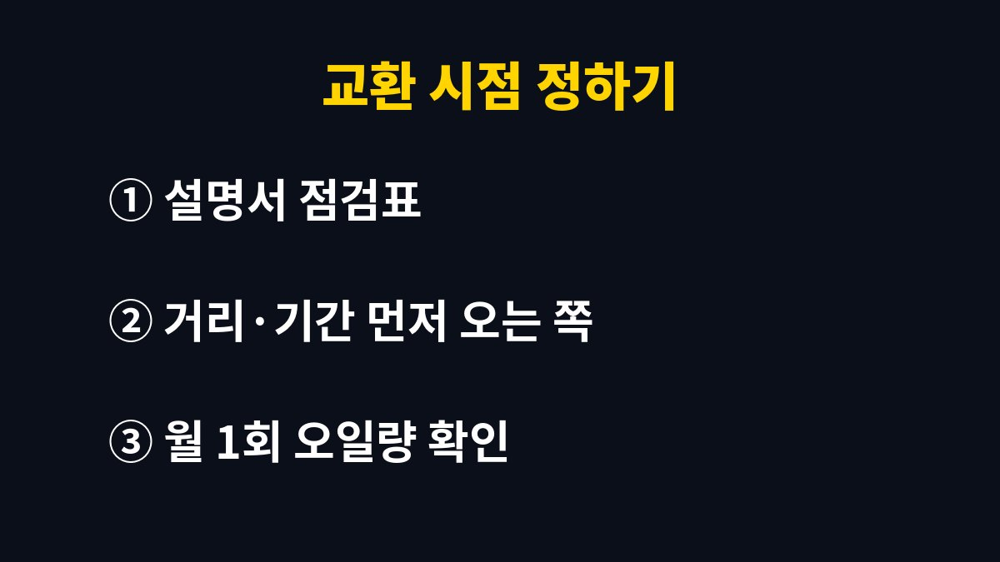

엔진오일 교환 주기는 계기판 주행거리 하나로 정하는 값이 아니라, 내 차가 차량 설명서의 일반 조건과 가혹 조건 중 어디에 해당하는지부터 따져야 정해진다.
같은 차라도 출퇴근 5분 거리만 오가는 차와 고속도로를 길게 달리는 차는 오일이 지치는 속도가 다르다.
그래서 남의 차 기준을 그대로 따라 하면 너무 일찍 갈거나 너무 늦게 가는 일이 생긴다.
예전 정비소 스티커에 흔히 적히던 숫자라 지금도 기준처럼 남아 있다.
요즘 차는 제조사가 차종과 엔진별로 교환 거리와 기간을 따로 정해 설명서에 적어 둔다.
숫자는 차마다 다르다.
설명서의 정기 점검표를 먼저 펴 보는 것이 출발점이다.
설명서에는 주행거리와 함께 개월 수가 적혀 있고, 둘 중 먼저 도달하는 쪽을 따르게 되어 있다.
1년에 몇천 km밖에 안 타는 차라도 기간이 지나면 교환 시점이 된다.
오일은 쓰지 않아도 수분과 산화로 성질이 변하기 때문이다.
색만으로는 오일 상태를 알 수 없다.
디젤 엔진은 갈자마자 검게 변하기도 하고, 가솔린 엔진은 한참 지나도 맑아 보이기도 한다.
색보다 양과 교환 후 지난 거리·기간을 본다.
대부분의 차량 설명서는 정기 점검표를 일반 조건과 가혹 조건 두 가지로 나눠 싣는다.
가혹 조건에 해당하면 엔진오일과 필터 교환 간격을 일반 조건보다 짧게 잡도록 안내한다.
아래 표는 설명서에서 가혹 조건으로 자주 꼽는 운행 형태를 정리한 것이다.
정확한 항목과 교환 거리는 차마다 다르므로 내 차 설명서와 맞춰 본다.
| 운행 형태 | 가혹 조건으로 보는 이유 | 내 차 확인 방법 |
|---|---|---|
| 짧은 거리 반복 주행 | 엔진이 충분히 데워지기 전에 시동을 끔 | 편도 주행 시간이 짧은지 본다 |
| 공회전·저속 정체가 잦음 | 주행거리보다 엔진 가동 시간이 김 | 도심 정체 출퇴근 비중을 본다 |
| 먼지 많은 길·비포장로 | 흡입 공기와 오일에 이물질이 섞임 | 공사장·농로 운행이 잦은지 본다 |
| 산길·언덕·짐 많이 싣기 | 엔진 부하가 높게 이어짐 | 견인이나 화물 적재가 잦은지 본다 |
| 추운 날 단거리 위주 | 응결된 수분이 오일에 남음 | 겨울 아침 짧은 이동이 많은지 본다 |
겨울철에는 마지막 항목에 해당하는 차가 많아진다.
아파트 지하주차장에서 마트까지 왕복 10분 남짓만 오가는 차라면 계기판 숫자가 적어도 가혹 조건 쪽에 가깝다.
반대로 주말마다 고속도로를 1시간 넘게 달리는 차는 일반 조건 기준을 따라도 무리가 적다.
택시나 배달처럼 하루 운행 시간이 긴 차는 거리와 상관없이 가혹 조건으로 분류하는 설명서가 많다.

교환 시점 전에 양이 조금 줄었다면 같은 규격의 오일을 보충하는 것으로 충분할 때가 많다.
그런데 보충 간격이 눈에 띄게 짧아졌거나 주차 자리 바닥에 기름 자국이 남는다면 누유를 의심해야 한다.
이때는 보충을 반복하지 말고 정비소에서 원인을 먼저 확인받는다.
오일 규격은 설명서의 권장 점도와 등급 표기를 그대로 따른다.
엔진오일 교환은 정비소가 권하는 거리보다 설명서와 내 운행 습관을 기준으로 정하면 된다.
다만 보증 기간이 남은 차라면 제조사 점검표대로 교환하고 영수증을 보관해야 보증 수리 때 다툼이 줄어든다.
다음 점검 때는 엔진오일과 함께 교환하는 오일 필터 주기도 설명서에서 같이 확인해 두면 된다.
※ 2026년 기준 공공기관 안내를 바탕으로 정리한 글이며, 차종과 연식에 따라 기준이 다를 수 있어 차량 설명서와 공식 안내를 함께 확인하길 바란다.